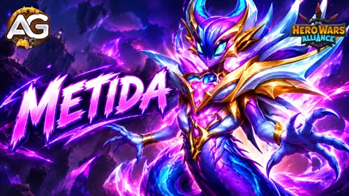
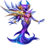
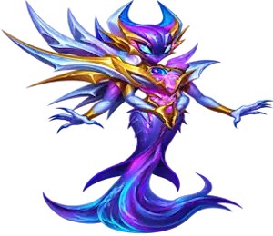
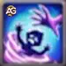
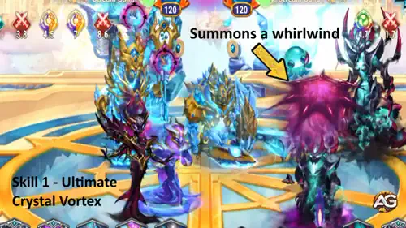
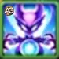
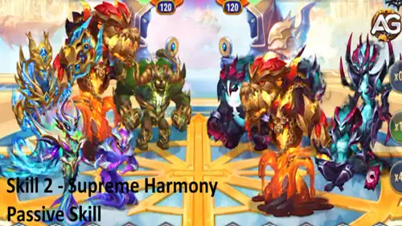
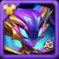
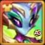
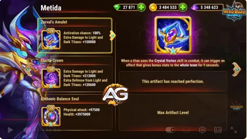

Metida-Guide: Elarit-Supertitanin Hero Wars Alliance
- Von: Alexandre Domingos. .
Was wäre, wenn eine einzige Titanin einen Gegner aus dem Kampf nehmen und gleichzeitig deinem Team helfen könnte, sich zu heilen, härter zuzuschlagen und sich schneller zu bewegen? Metida bringt diese Kombination in Hero Wars Alliance. Diese Elarit-Supertitanin kämpft aus der hinteren Reihe, fängt den mittleren Gegner mit Kristallwirbel ein und stärkt ihre Verbündeten mit Höchster Harmonie.
An Metida interessiert mich besonders, wie stark sich ihr Wert je nach ihren Teammitgliedern verändert. In meinen Tests mit vollständig ausgebauten Teams gewannen Hyperion, Metida, Tydus, Orm und Sigurd alle 10 Kämpfe gegen die getestete Lichtaufstellung und alle 10 gegen die getestete Dunkelheitsaufstellung. Ich zeige dir, wie ihre Werte und Fähigkeiten funktionieren, damit du verstehst, was sie deinen eigenen Titanenteams bietet.

Metida gehört zum Element Elarit. Ihre Synergie mit Erd-, Wasser-, Feuer- und Elarit-Titanen entsteht durch Höchste Harmonie; das bedeutet nicht, dass sie selbst allen vier Elementen angehört.
Mein erster Eindruck ist, dass ihre Kombination aus Kontrolle und flexibler Unterstützung sie besonders für gemischte Teams interessant macht. Die Kampfergebnisse sind vielversprechend, beschreiben aber bestimmte Begegnungen und keine garantierten Siege gegen jede Aufstellung.

📋 Metida-Guide - Inhaltsverzeichnis
- Wer ist Metida?
- Metidas maximale Werte
- Metidas Gesamtbewertung in der Meta
- Metidas Vor- und Nachteile
- Metidas Fähigkeiten erklärt
- Kristallwirbel
- Höchste Harmonie
- Bester Skin für Metida
- Metidas Artefaktprioritäten
- So konterst du Metida
- Beste Teams für Metida
- Alexandres abschließendes Urteil
Wer ist Metida in Hero Wars Alliance?
Metida ist eine Elarit-Supertitanin, die die Kontrolle eines einzelnen Ziels mit Teamunterstützung verbindet. Ihr Wirbelwind hindert den mittleren Gegner am Handeln, während ihre zweite Fähigkeit Boni gewährt, die von den Elementen der überlebenden verbündeten Titanen abhängen.

- Rolle: Supertitanin
- Element: Elarit
- Position: Hintere Reihe
- Synergie: Erd-, Wasser-, Feuer- und Elarit-Titanen
Betrachte sie als Möglichkeit, jedem Teammitglied eine zusätzliche Aufgabe zu geben. Feuerverbündete ermöglichen Heilung, Wasserverbündete erhöhen den Angriff, Erdverbündete erhöhen die Geschwindigkeit und Elarit-Verbündete ermöglichen Schadensboni für bevorzugte Angreifer. Diese Verbündeten am Leben zu halten, hilft dabei, ihr Unterstützungspotenzial zu bewahren.
Metidas maximale Werte - Hero Wars Alliance
Diese Werte eines vollständig ausgebauten Builds bilden die Grundlage für die folgenden Fähigkeitsberechnungen:
- Gesundheit: 15.283.000
- Physischer Angriff: 717.470
- Zusätzliche Verteidigung gegen Licht- und Dunkelheitstitanen: 120.600
- Zusätzlicher Schaden gegen Licht- und Dunkelheitstitanen: 213.000
Physischer Angriff verstärkt Kristallwirbel und drei Effekte von Höchste Harmonie: die Heilung, den Bonus auf physischen Angriff und die Schadenserhöhung. Der Geschwindigkeitsbonus des Erdelements hängt dagegen von der Anzahl der überlebenden Erdtitanen ab.
Metidas Vor- und Nachteile - Hero Wars Alliance
✅ Vorteile
- Fünf Sekunden Kontrolle über den mittleren Gegner
- Wirbelwindschaden jede Sekunde
- Unterstützt vier elementare Teamsynergien
- Physischer Angriff verstärkt mehrere Fähigkeitseffekte
- Vielversprechende Ergebnisse mit den getesteten, vollständig ausgebauten Teams
❌ Nachteile
- Der Wirbelwind kontrolliert nur einen Gegner
- Elementboni hängen von überlebenden Verbündeten ab
- Ihr Heilungsbonus erfordert Feuertitanen
- Für Licht- und Dunkelheitsverbündete ist kein Bonus von Höchste Harmonie angegeben
Metidas Fähigkeiten erklärt - Hero Wars Alliance
Erfahre, wie Metida einen mittleren Gegner einfängt und überlebende Verbündete in Heilungs-, Angriffs-, Geschwindigkeits- und Schadensboni umsetzt, einschließlich Formeln für PVP-Kämpfe.

Fähigkeit 1 - Kristallwirbel (Ultimative Fähigkeit)
Beschreibung im Spiel: Beschwört für 5,0 Sekunden einen Wirbelwind, der den mittleren Gegner einfängt. Der Wirbelwind verursacht alle 1 Sekunde Schaden und bewegt den Gegner über das Schlachtfeld. Solange der Gegner gefangen ist, kann er sich nicht bewegen, angreifen oder Fähigkeiten einsetzen.

Erklärung der Fähigkeit: Metida fängt den Gegner in der Mitte der gegnerischen Aufstellung ein. Fünf Sekunden lang wird dieser Titan vom Wirbelwind herumgetragen und kann nicht selbstständig handeln. Der Wirbelwind verursacht einmal pro Sekunde Schaden, während deine Verbündeten weiterkämpfen.
Schaden pro Tick bei maximalen Werten: 717.470, vor Kampfmodifikatoren.
Formel: (100% × Metidas physischer Angriff).
Berechnung mit maximalen Werten: (100% × 717.470) = 717.470 Schaden pro Tick.
Warum das im PVP wichtig ist: Ein gefangener Gegner kann während des Kontrollzeitraums keine Angriffe oder Fähigkeiten beisteuern. Dadurch kann dein Team Zeit gewinnen, um sich zu erholen oder die verbleibenden Gegner unter Druck zu setzen. Das Ziel ist der mittlere Gegner. Gehe also nicht davon aus, dass der Wirbelwind den Gegner mit dem höchsten Angriff auswählt.
Kristallwirbel aktiviert außerdem Zorvals Amulett. Auf Artefaktstufe 120 mit der angegebenen Aktivierungschance von 100% erhält das gesamte Team +150.000 zusätzlichen Schaden gegen Licht- und Dunkelheitstitanen für neun Sekunden.
Alexandres Strategietipp: Achte darauf, welcher Gegner die Mitte besetzt, wenn Metida ihre Fähigkeit einsetzt. Der Schaden ist nützlich, aber diesen Titanen am Einsatz einer entscheidenden Fähigkeit zu hindern, kann genauso wertvoll sein.

Fähigkeit 2 - Höchste Harmonie
Beschreibung im Spiel: Stärkt Verbündete für 9,0 Sekunden. Die Boni hängen von der Anzahl der überlebenden Titanen jedes Elements ab: Jeder Feuertitan heilt alle Verbündeten jede Sekunde; jeder Wassertitan erhöht den physischen Angriff aller Verbündeten; jeder Erdtitan erhöht die Geschwindigkeit aller Verbündeten um 10; jeder Elarit-Titan erhöht den Schaden eines Verbündeten, wobei Titanen mit dem höchsten Angriff bevorzugt werden.

Erklärung der Fähigkeit: Stell dir jedes Element als einen anderen Bonus vor. Zähle deine überlebenden Titanen dieses Elements, um zu verstehen, was dein Team während der neunsekündigen Wirkung erhält. Du brauchst nicht alle vier Elemente, um zu profitieren: Jedes vorhandene Element trägt seinen eigenen Effekt bei.
Feuertitanen: Heilung jede Sekunde
Jeder überlebende Feuertitan gewährt 71.747 Heilung pro Sekunde für jeden Verbündeten bei Metidas angegebenem maximalen Angriff. Zwei überlebende Feuertitanen gewähren 143.494 Heilung pro Sekunde für jeden Verbündeten.
Formel: (10% × Metidas physischer Angriff × überlebende Feuertitanen).
Berechnung mit maximalen Werten: (10% × 717.470) = 71.747 Heilung pro Verbündetem und Sekunde bei einem Feuertitanen.
Wassertitanen: mehr physischer Angriff für alle
Jeder überlebende Wassertitan gewährt 143.494 physischen Angriff für jeden Verbündeten bei den angegebenen Ausgangswerten. Zwei überlebende Wassertitanen gewähren 286.988 physischen Angriff für jeden Verbündeten während der Wirkungsdauer.
Formel: (20% × Metidas physischer Angriff × überlebende Wassertitanen).
Berechnung mit maximalen Werten: (20% × 717.470) = 143.494 zusätzlichen physischen Angriff pro Verbündetem bei einem Wassertitanen.
Erdtitanen: zusätzliche Geschwindigkeit
Jeder überlebende Erdtitan gewährt allen Verbündeten +10 Geschwindigkeit. Zwei überlebende Erdtitanen gewähren +20 Geschwindigkeit. Dieser Bonus skaliert nicht mit Metidas physischem Angriff.
Formel: (10 × überlebende Erdtitanen).
Elarit-Titanen: Schadensboni für bevorzugte Angreifer
Jeder überlebende Elarit-Titan ermöglicht eine Schadenserhöhung für einen Verbündeten, wobei Titanen mit dem höchsten Angriff bevorzugt werden. Bei den angegebenen Ausgangswerten beträgt die Schadenserhöhung 143.494 für einen ausgewählten Verbündeten.
Formel: (20% × Metidas physischer Angriff).
Berechnung mit maximalen Werten: (20% × 717.470) = 143.494 Schadenserhöhung.
Der Prozentsatz verwendet Metidas physischen Angriff als Grundlage. Es handelt sich nicht um eine pauschale Erhöhung um 20% des Gesamtschadens des ausgewählten Verbündeten.
Warum das im PVP wichtig ist: Die Teamzusammenstellung bestimmt, welche Vorteile du erhältst. Feuer sorgt für Erholung, Wasser erhöht den Angriff, Erde erhöht die Geschwindigkeit und Elarit lenkt zusätzlichen Schaden auf bevorzugte Angreifer. Der Verlust eines Verbündeten verringert die für diese Fähigkeit verfügbare Anzahl überlebender Elementvertreter.
Alle Beispiele verwenden Metidas angegebenen 717.470 physischen Angriff als feste Grundlage. Die tatsächlichen Kampfwerte können durch Boni und andere Kampfeffekte abweichen.
Alexandres Strategietipp: Beginne bei den Bedürfnissen deines Teams. Eine Aufstellung ohne Feuertitanen erhält keine Heilung durch Höchste Harmonie, selbst wenn sie stark von Wasser- und Elarit-Boni profitiert. Prüfe, welche Elemente dein überlebendes Team bereitstellt, bevor du beurteilst, wie viel Unterstützung Metida dir gibt.
Bester Skin für Titanin Metida - Hero Wars Alliance
Wähle Metidas Skin, indem du stärkere Fähigkeitseffekte gegen Überlebensfähigkeit abwägst, und erfahre, wie der Urzeit-Skin+ die Gesundheit verändert, ohne die Kosten für den Stufenaufstieg zu erhöhen.

Standard-Skin
Physischer Angriff: +196.800
Stufe: 60/60
Das ist meine erste allgemeine Investition, weil physischer Angriff Kristallwirbel sowie die Heilung, den Angriffsbonus und die Schadenserhöhung von Höchste Harmonie verbessert. Er hilft Metida auch dann, wenn das gegnerische Team keine Licht- oder Dunkelheitstitanen enthält.
Auf der maximalen Skin-Stufe beträgt sein Beitrag zu jedem Heilungstick pro überlebendem Feuertitanen (196.800 × 10%) = 19.680. Sein Beitrag zu jedem Wasser-Angriffsbonus und jeder Elarit-Schadenserhöhung beträgt (196.800 × 20%) = 39.360.
Ausbaupriorität für PVP: Sehr hoch - Zuerst wegen des allgemeinen Nutzens für die Fähigkeiten: Derselbe Wert verstärkt ihren eigenen Schaden und mehrere Vorteile für Verbündete.
Ausbaupriorität für den Dungeon: Sehr hoch - Zuerst, wenn sie zuverlässig überlebt. Stärkere Heilung mit Feuerverbündeten und mehr Schaden können einem gemischten Team helfen, wiederholte Kämpfe durchzustehen.

Urzeit-Skin+
Gesundheit: +5.255.950
Stufe: 60/60, mit aktiviertem Skin+
Der grundlegende Urzeit-Skin gewährt +2.627.975 Gesundheit auf der maximalen Stufe. Skin+ verdoppelt diesen Bonus auf derselben Skin-Stufe: (2.627.975 × 2) = 5.255.950 Gesundheit. Das sind zwei Versionen desselben Skins, keine zwei getrennten Boni, die du addieren solltest.
Ausbaupriorität für PVP: Hoch - Standardmäßig an zweiter Stelle. Ziehe Gesundheit vor, wenn Metida stirbt, bevor ihre Kontrolle und Unterstützung den Kampf beeinflussen können.
Ausbaupriorität für den Dungeon: Hoch - Eine nützliche Investition in die Überlebensfähigkeit, wo Metida für deine Aufstellung verfügbar ist. Priorisiere sie früher, wenn es der begrenzende Faktor ist, sie am Leben zu halten.
So funktioniert Skin+: Metida ist die erste Titanin, die in Hero Wars Alliance einen Skin+ erhält. Durch die Aktivierung werden die Werte des Grundskins auf seiner aktuellen Stufe sofort verdoppelt. Die Kosten in Titanen-Skin-Steinen für den Stufenaufstieg bleiben dieselben wie beim Grundskin, unabhängig davon, ob du Skin+ vor oder nach dem Ausbau aktivierst. Das bezieht sich auf die Kosten des Stufenaufstiegs; es bedeutet nicht, dass die Freischaltung von Skin+ selbst kostenlos ist.
Metidas Skin-Reihenfolge: Zuerst der Standard-Skin für stärkere Fähigkeiten, danach der Urzeit-Skin+ für mehr Widerstandskraft. Kehre diese praktische Priorität um, wenn die Überlebensfähigkeit das Problem ist. Die oben genannten Boni sind Bestandteile eines vollständig ausgebauten Builds und keine zusätzlichen Werte, die du erneut auf die maximalen Gesamtwerte aufschlagen solltest.
Dungeon-Prioritäten: Diese Bewertungen folgen ihrer Fähigkeitsmechanik und keinem dokumentierten Dungeon-Test. Prüfe die Zulassungsbedingungen der Räume und die Überlebensfähigkeit deines Teams, bevor du gezielt für den Dungeon-Einsatz investierst.
Ausbaupriorität für Metidas Artefakte - Hero Wars Alliance
Plane Metidas Artefaktausbau rund um die gegnerunabhängige Stärkung ihrer Fähigkeiten und wäge anschließend ihren Teamschadensbonus und ihre persönliche Verteidigung gegen die Gegner ab, denen du begegnest.

Zorvals Amulett (Waffenartefakt)
Stufe: 120
Zusätzlicher Schaden gegen Licht- und Dunkelheitstitanen: +150.000 für das gesamte Team
Aktivierungschance: 100%
Bonusdauer: 9 Sekunden
Wenn Metida Kristallwirbel einsetzt, gewährt das Waffenartefakt diesen Teambonus. Der Bonus verbessert den Schaden gegen Licht- und Dunkelheitsziele; er erhöht weder den allgemeinen physischen Angriff noch die Heilungsformel von Höchste Harmonie.
Ausbaupriorität für PVP: Hoch - An zweiter Stelle für einen Build gegen Licht- und Dunkelheitsgegner: Der Vorteil erreicht das ganze Team. Senke seine Priorität, wenn deine üblichen Gegner andere Elemente einsetzen.
Ausbaupriorität für den Dungeon: Niedrig - Sein Bonus erfordert Licht- oder Dunkelheitsziele. In Räumen ohne diese Elemente hilft es weder beim Schaden noch bei der Erholung.
 - Hero Wars Alliance")
Elarit-Krone (Kronenartefakt)
Stufe: 120
Zusätzlicher Schaden gegen Licht- und Dunkelheitstitanen: +213.000
Zusätzliche Verteidigung gegen Licht- und Dunkelheitstitanen: +120.600
Die Krone verbessert Metidas persönlichen Angriff und ihre Verteidigung gegen Licht- und Dunkelheitstitanen. Von den sechs Elementgruppen gelten ihre angegebenen Boni für diese beiden; sie bieten keinen allgemeinen Verteidigungsbonus gegen Erde, Wasser, Feuer oder Elarit.
Ausbaupriorität für PVP: Mittel - An dritter Stelle für einen allgemeinen Build. Ziehe sie der Waffe vor, wenn Licht- oder Dunkelheitsschaden Metida tötet, bevor sie ihr Team unterstützen kann.
Ausbaupriorität für den Dungeon: Niedrig - In Räumen ohne Licht- oder Dunkelheitsgegner gelten die angegebenen Boni nicht. Wenn du solchen Gegnern begegnest, kann ihr defensiver Nutzen sie für das Überleben wertvoller als die Waffe machen.
 - Hero Wars Alliance")
Chthonisches Gleichgewichtssiegel (Siegelartefakt)
Stufe: 120
Physischer Angriff: +97.500
Gesundheit: +3.975.000
Das Siegel ist meine erste Artefaktwahl. Gesundheit hilft Metida beim Überleben, während physischer Angriff Kristallwirbel und drei Effekte von Höchste Harmonie unabhängig vom gegnerischen Element verbessert.
Sein Beitrag zur Heilung pro Tick und Feuertitan beträgt (97.500 × 10%) = 9.750. Sein Beitrag zu jedem Wasser-Angriffsbonus und jeder Elarit-Schadenserhöhung beträgt (97.500 × 20%) = 19.500.
Ausbaupriorität für PVP: Sehr hoch - Zuerst: Gegnerunabhängige Überlebensfähigkeit und stärkere Fähigkeiten sind gegen jedes feindliche Element nützlich.
Ausbaupriorität für den Dungeon: Sehr hoch - Zuerst dort, wo du Metida einsetzt: Gesundheit und physischer Angriff helfen in den zugelassenen Begegnungen, statt von einem bestimmten gegnerischen Element abzuhängen.
Artefaktpriorität: Zuerst das Chthonische Gleichgewichtssiegel, dann Zorvals Amulett für Licht- und Dunkelheitsbegegnungen und anschließend die Elarit-Krone. Wenn das persönliche Überleben gegen diese Elemente das Problem ist, ziehe die Krone der Waffe vor. Konzentriere dich in Dungeon-Räumen ohne Licht- oder Dunkelheitsziele auf das Siegel.
So konterst du Titanin Metida - Hero Wars Alliance
Beim dokumentierten Sieg gegen eine gegnerische Metida kamen Hyperion, Metida, Araji, Orm und Angus zum Einsatz. Das Team gewann 10 von 10 gegen Brustar, Araji, Mort, Umbra und Metida mit beiden Teams auf maximalem Ausbau. Das spricht für diese vollständige Aufstellung in dieser Begegnung; es belegt weder einen einzelnen Konter noch eine universelle Antwort auf jedes Metida-Team.
Mein Ansatz besteht darin, ihre überlebenden Verbündeten unter Druck zu setzen und gleichzeitig die eigenen Unterstützer am Leben zu halten. Jeder verlorene Elementverbündete verringert die verfügbare Unterstützung von Höchste Harmonie. Gehe nicht davon aus, dass Erdtitanen Metida automatisch kontern: Sie gehört zu Elarit, und das getestete reine Erdteam verlor gegen eine andere Metida-Zusammenstellung.
Wichtige Mitglieder der siegreichen Aufstellung
Die folgenden Mitwirkenden sind alphabetisch aufgeführt. Ihre Rollen erklären den Ansatz der Aufstellung; der Test zeigt nicht isoliert, welche Fähigkeit das Ergebnis entschieden hat.

Angus bietet eine widerstandsfähige Front und Flächenschaden, der mehrere Gegner unter Druck setzen kann, während Kristallwirbel nur einen kontrolliert. Sein Erdelement ermöglicht außerdem den Geschwindigkeitsbonus von Höchste Harmonie auf deiner Seite. Seine Boni gegen Wasser sind kein direkter Elementvorteil gegen Metida.

Araji bringt anhaltenden Strahlschaden gegen die Front und Geschwindigkeitsunterstützung für Verbündete mit. Sein Feuerelement ermöglicht Metidas Heilungsbonus und hilft dieser Aufstellung, Druck mit Erholung zu verbinden. Betrachte ihn als Teil des getesteten Teams und nicht als garantierte Antwort auf eine gegnerische Metida.
Deine eigene Metida trägt Kontrolle des mittleren Ziels und elementare Unterstützung bei. In der getesteten siegreichen Aufstellung kann sie mit Feuer-, Wasser-, Erd- und Elarit-Verbündeten zusammenarbeiten, wodurch Höchste Harmonie Zugang zu allen vier Bonusarten erhält.

Verheerende Verbindung sammelt einen Teil des von Verbündeten erlittenen Schadens und fügt ihn später einem mittleren Gegner zu. Das bietet eine Möglichkeit, während eines längeren Kampfes Druck zurückzugeben. Orm gehört außerdem zu Wasser und Elarit und trägt damit zu beiden entsprechenden Boni von Höchste Harmonie bei.
Beste Teams für Titanin Metida - Hero Wars Alliance
Diese drei Zusammenstellungen stammen aus meinen Tests mit vollständig ausgebauten Builds. Die vier folgenden Begegnungen endeten jeweils mit 10 Siegen in 10 Kämpfen. Verwende genau diese Gegner als Vergleichsgrundlage, wenn du die Ergebnisse mit deinem eigenen Team vergleichst.
Team 1 - Wasserunterstützung mit Sigurd
Strategie der Zusammenstellung von Team 1
Hyperion, Tydus und Orm bilden einen stark auf Unterstützung ausgerichteten Wasserkern, während Sigurd den Tankplatz übernimmt und Metida Kontrolle hinzufügt. Orm trägt außerdem zur Elarit-Synergie bei. Diese Aufstellung betont den Wasser-Angriffsbonus und die Elarit-Schadensboni von Höchste Harmonie.
Dokumentierte Ergebnisse mit vollständig ausgebauten Teams
- 10 Siege / 0 Niederlagen gegen Rigel, Iyari, Lumira, Solaris, Amon.
- 10 Siege / 0 Niederlagen gegen Brustar, Keros, Umbra, Mort, Tenebris.
Team 1 - Schwächen und Überlegungen
Mögliche Schwächen: Dieses Team enthält weder einen Feuer- noch einen Erdtitanen. Höchste Harmonie liefert daher weder feuerbasierte Heilung noch erdbasierte Geschwindigkeit. Die Erholung hängt von den anderen Unterstützungswerkzeugen der Aufstellung ab.
Strategische Überlegungen: Die dokumentierten Ergebnisse umfassen eine Licht- und eine Dunkelheitsaufstellung. Sie belegen nicht die Ergebnisse gegen Erd-, Feuer- oder andere gemischte Teams.
Team 2 - Feuerdruck mit Asherona und Araji
Strategie der Zusammenstellung von Team 2
Asherona und Araji stellen zwei Feuerverbündete bereit und ermöglichen damit die Heilung von Höchste Harmonie. Hyperion und Orm bieten Wasserunterstützung, während Metida und Orm für Elarit-Synergie sorgen. Beim angegebenen Angriffsausgangswert ermöglichen die beiden Feuertitanen während Höchste Harmonie 143.494 Heilung pro Verbündetem und Sekunde.
Dokumentierte Ergebnisse mit vollständig ausgebauten Teams
- 10 Siege / 0 Niederlagen gegen Angus, Avalon, Verdoc, Eden, Sylva.
Team 2 - Schwächen und Überlegungen
Mögliche Schwächen: Diese Aufstellung hat unter den fünf aufgeführten Titanen keinen dedizierten Tank und keinen Erd-Geschwindigkeitsbonus. Achte auf das Überleben des tatsächlich vordersten Titanen; das Ergebnis bei maximalem Ausbau garantiert nicht dasselbe Resultat bei ungleichmäßiger Investition.
Strategische Überlegungen: Sie besiegte das aufgeführte reine Erdteam, doch hier liegen keine dokumentierten Ergebnisse gegen Licht-, Dunkelheits- oder alternative gemischte Teams vor.
Team 3 - Gemischte Elemente mit Angus
Strategie der Zusammenstellung von Team 3
Angus besetzt den Tankplatz und ergänzt Erdsynergie; Araji bringt Feuer, Hyperion Wasser und Orm sowohl Wasser als auch Elarit mit. Metida trägt ihr eigenes Elarit-Element bei. Dadurch erhält Höchste Harmonie Zugang zu allen vier Bonusarten, während ein dedizierter Tank erhalten bleibt.
Dokumentierte Ergebnisse mit vollständig ausgebauten Teams
- 10 Siege / 0 Niederlagen gegen Brustar, Araji, Mort, Umbra, Metida.
Team 3 - Schwächen und Überlegungen
Mögliche Schwächen: Die Elementvielfalt bietet mehrere Werkzeuge, doch jeder Verbündete zählt. Geht Araji verloren, entfällt der einzige Feuervertreter; geht Angus verloren, entfällt der einzige Erdvertreter. Behalte ihr Überleben im Blick, wenn du Ausbaumöglichkeiten vergleichst.
Strategische Überlegungen: Dies ist die dokumentierte Antwort auf Brustar, Araji, Mort, Umbra und Metida. Es ist kein Beleg dafür, dass jedes Team mit Metida gegen diese Aufstellung verliert.
Alexandres Strategietipp: Ich würde mit der getesteten Zusammenstellung beginnen, die deinen bereits ausgebauten Titanen am nächsten kommt. Für die Wasseraufstellung gibt es zwei dokumentierte Begegnungen, die Feuermischung besiegte das aufgeführte Erdteam und die Angus-Mischung besiegte das aufgeführte gegnerische Metida-Team. Keiner dieser Tests weist eine einzige Aufstellung als die beste gegen jeden Gegner aus.
⭐ Metida - Alexandres abschließendes Urteil
Was mir an Metida am besten gefällt, ist, dass sie die Bedeutung der Teamzusammenstellung sehr deutlich macht. Kristallwirbel schafft ein fünfsekündiges Kontrollfenster, während Höchste Harmonie die Verbündeten belohnt, die du am Leben hältst. Ihr Wert ergibt sich daraus, wie diese beiden Fähigkeiten mit dem Rest deiner Aufstellung zusammenarbeiten.
Meine anfängliche Ausbaureihenfolge ist Standard-Skin vor Urzeit-Skin+, mit dem Chthonischen Gleichgewichtssiegel an erster Stelle bei den Artefakten. Physischer Angriff verstärkt mehrere Effekte gleichzeitig. Wenn Metida zu früh stirbt, ziehe Gesundheit auf der Liste vor; gegen Licht- und Dunkelheitsgegner baust du Waffe und Krone danach aus, ob dein Team mehr Schaden oder Metida mehr Schutz braucht.
Die vier 10-0-Ergebnisse machen sie zu einer vielversprechenden Ergänzung für die getesteten Teams. Mein Rat ist, die Zusammenstellung zu wählen, die zu deinen verfügbaren Titanen und dem Gegner passt, den du besiegen musst, und sie anschließend auf deinem eigenen Investitionsniveau zu testen. Das gemischte Team mit Angus ist besonders interessant, weil es jeden Bonus von Höchste Harmonie in derselben Aufstellung vereint.
Entdecke neue Fähigkeiten mit unseren empfohlenen Guides!
 Titanen-Guide zu Alecto für Hero Wars Alliance
Titanen-Guide zu Alecto für Hero Wars Alliance Titanen-Guide zu Eden für Hero Wars Alliance
Titanen-Guide zu Eden für Hero Wars Alliance Titanen-Guide zu Orm für Hero Wars Alliance
Titanen-Guide zu Orm für Hero Wars Alliance Titanen-Guide zu Pallant für Hero Wars Alliance
Titanen-Guide zu Pallant für Hero Wars Alliance Titanen-Guide zu Umbra für Hero Wars Alliance
Titanen-Guide zu Umbra für Hero Wars AllianceTeile deine Meinung!
Hat dir unser Titanen-Guide zu Metida gefallen? Gibt es etwas, das du nicht verstanden hast, oder möchtest du Änderungen vorschlagen? Beteilige dich am Kommentarbereich von Alexandre Games und teile deine Meinung, Fragen und Kampfergebnisse.
Klicke auf die Schaltfläche unten, um loszulegen: